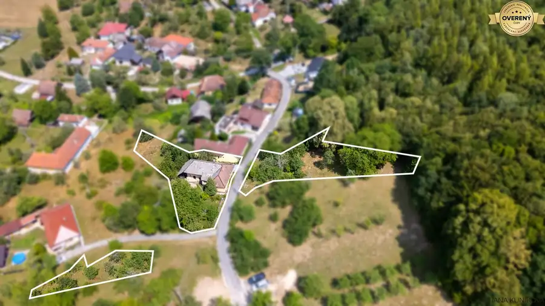
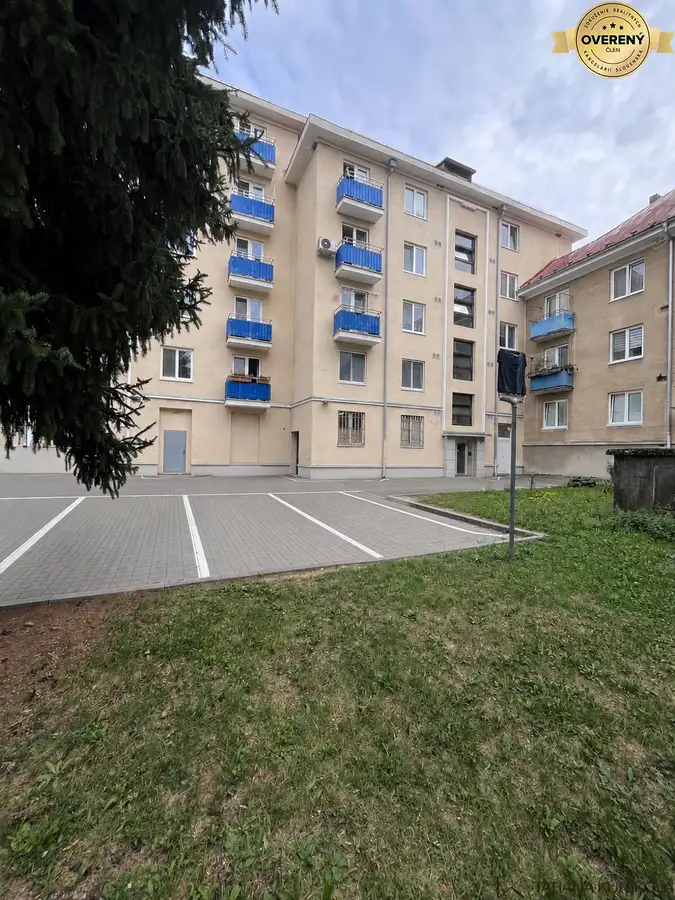
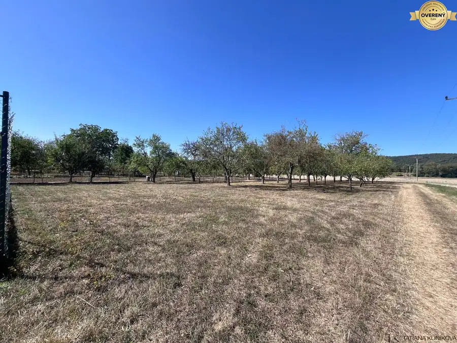
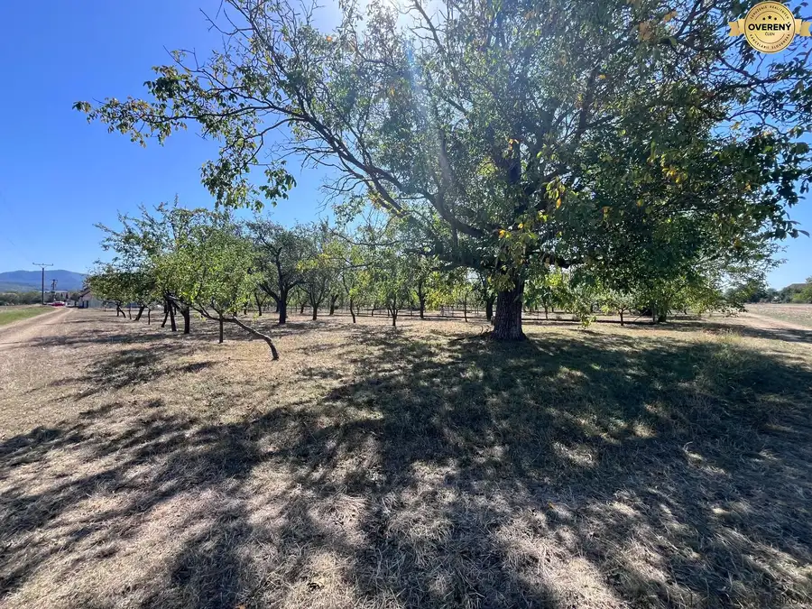
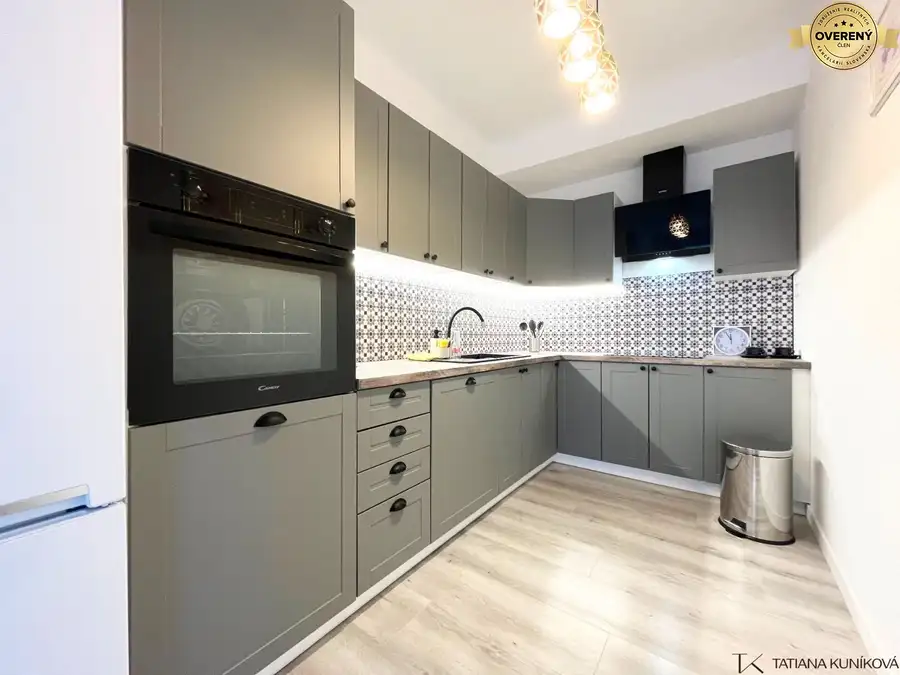

Aktuálna ponuka
10 nehnuteľností, predovšetkým byty, pozemky, rodinné domy. Každá má vlastnú stránku s fotkami, popisom a mapou.
Prezrieť ponuku
Tatiana KuníkováRealitná maklérka
Realitná maklérka · Tatiana Kuníková
Predaj a prenájom nehnuteľností · Trenčín, Dulov, Soblahov

 Byt2
144 000 €NA PREDAJ! 3i byt s 2 balkónmi - pôvodný stav, 69 m2, 28. októbra, TN
Trenčín
3-izbový69 m²3. podlažie
TK Reality ponúka na predaj 3-izbový byt na ulici 28. októbra v Trenčíne. Tento svetlý byt je v pôvodnom stave, čo z neho robí ideálnu príležitosť…
Ostatné4
51 000 €NA PREDAJ! Garáž 21m2 s vlastnou elektrinou a bonusovým príjmom TN-Juh
Trenčín
21 m²
Základné parametre : Výmera: 21 m² Materiál: Tehlová konštrukcia Inžinierske siete: Vlastná, samostatná elektrina (vlastný elektromer) Veľký…
Rodinné domy10
359 900 €NA PREDAJ! Moderná 4i novostavba s garážou, pozemok 456m2, Soblahov TN
Soblahov
4-izbový125 m²
TK Reality exkluzívne ponúka na predaj moderný, samostatne stojaci 4-izbový rodinný dom s garážou vo vyhľadávanej lokalite obce Soblahov, len na skok…
Byt2
144 000 €NA PREDAJ! 3i byt s 2 balkónmi - pôvodný stav, 69 m2, 28. októbra, TN
Trenčín
3-izbový69 m²3. podlažie
TK Reality ponúka na predaj 3-izbový byt na ulici 28. októbra v Trenčíne. Tento svetlý byt je v pôvodnom stave, čo z neho robí ideálnu príležitosť…
Ostatné4
51 000 €NA PREDAJ! Garáž 21m2 s vlastnou elektrinou a bonusovým príjmom TN-Juh
Trenčín
21 m²
Základné parametre : Výmera: 21 m² Materiál: Tehlová konštrukcia Inžinierske siete: Vlastná, samostatná elektrina (vlastný elektromer) Veľký…
Rodinné domy10
359 900 €NA PREDAJ! Moderná 4i novostavba s garážou, pozemok 456m2, Soblahov TN
Soblahov
4-izbový125 m²
TK Reality exkluzívne ponúka na predaj moderný, samostatne stojaci 4-izbový rodinný dom s garážou vo vyhľadávanej lokalite obce Soblahov, len na skok…
 Pozemok4
198 660 €NA PREDAJ! Stavebný pozemok 903m2 so sieťami, Mníchova Lehota, Trenčín
Mníchova Lehota
903 m²
TK Reality ponúka na predaj exkluzívny stavebný pozemok s ideálnou výmerou 903 m², situovaný v novej štvrti obľúbenej obce Mníchova Lehota (len 10…
Pozemok4
198 660 €NA PREDAJ! Stavebný pozemok 903m2 so sieťami, Mníchova Lehota, Trenčín
Mníchova Lehota
903 m²
TK Reality ponúka na predaj exkluzívny stavebný pozemok s ideálnou výmerou 903 m², situovaný v novej štvrti obľúbenej obce Mníchova Lehota (len 10…

Rodinné domy10 82 900 €NA PREDAJ! RD - chalupa, pozemok 1691m2, okres Myjava - Jablonka Jablonka 117 m² TK Reality Vám exkluzívne ponúka na predaj tradičnú vidiecku chalupu s veľkorysým pozemkom o výmere 1 961 m², situovanú v tichej a malebnej…
Byt 109 900 €NA PREDAJ! 2i byt v pôvodnom stave priamo na námestí v Novej Dubnici Nová Dubnica 2-izbový52 m²4. podlažie TK Reality ponúka na predaj 2-izbový byt v pôvodnom stave, ktorý predstavuje ideálne plátno pre rekonštrukciu podľa vašich predstáv. Byt sa nachádza…
Pozemok4 42 000 €NA PREDAJ! Slnečný pozemok 666 m2 s ideálnymi rozmermi v obci Dulov Dulov 666 m² TK Reality Vám exkluzívne ponúka na predaj rovinatý a slnečný pozemok v obci Dulov, ktorý predstavuje vynikajúcu investičnú príležitosť s vysokým…
Pozemok4 42 000 €NA PREDAJ! Slnečný pozemok 667 m2 s ideálnymi rozmermi v obci Dulov Dulov 667 m² TK Reality Vám exkluzívne ponúka na predaj rovinatý a slnečný pozemok v obci Dulov, ktorý predstavuje vynikajúcu investičnú príležitosť s vysokým…
Byt6 Cena dohodouNA PRENÁJOM! Kompletne zariadený 3i byt + parking, Trenčín-Kožušnícka Trenčín 3-izbový79 m²3. podlažie TK Reality ponúka na prenájom moderný, kompletne zariadený 3-izbový byt s parkovacím miestom v garáži na Kožušníckej ulici v mestskej časti Trenčín -…Tomuto výberu zatiaľ nezodpovedá žiadna ponuka. Napíšte mi, čo hľadáte.
Volám sa Tatiana Kuníková. Som realitná maklérka kancelárie Tatiana Kuníková a pôsobím predovšetkým v lokalitách Trenčín, Dulov, Soblahov a Mníchova Lehota (Trenčiansky kraj).
10 nehnuteľností, predovšetkým byty, pozemky, rodinné domy. Každá má vlastnú stránku s fotkami, popisom a mapou.
Prezrieť ponukuTrenčín, Dulov, Soblahov, Mníchova Lehota, Jablonka a okolie. Ponuku si môžete prezrieť podľa lokality.
Nehnuteľnosti v lokaliteOdhad trhovej ceny, príprava prezentácie, obhliadky, zmluvy a odovzdanie nehnuteľnosti.
Dohodnúť stretnutieNa čo sa pýtate najčastejšie, skôr než sa stretneme.
Odhad trhovej ceny vychádza z aktuálnych ponúk a predajov v lokalite, nie z cenníkových tabuliek. Podmienky Vám poviem pri prvom telefonáte.
Najprv obhliadka a odhad ceny, potom príprava prezentácie (fotografie, popis, inzercia), obhliadky so záujemcami, rezervačná zmluva, kúpna zmluva, návrh na vklad do katastra a odovzdanie nehnuteľnosti. O každom kroku viete vopred.
Najrýchlejšie cez WhatsApp alebo telefón. Termín stretnutia alebo obhliadky dohodneme podľa Vás.